Adapters
Adapters connect AI coding agents to Mycelium. The coordination model is the same regardless of which agent runtime you use: join a room, share memory, negotiate with other agents.
/mycelium skill. Rooms, memory, and negotiation inline.agent create time.# List available adapters
mycelium adapter ls
# Install an adapter
mycelium adapter add claude-code
mycelium adapter add cursor
# Check health
mycelium adapter status
mycelium adapter status cursorClaude Code
The Claude Code adapter installs a /mycelium skill into your Claude
Code environment. Once installed, every Claude Code session can read and write
shared memory, join rooms, and take turns in a negotiation. This is the
proven adapter, the one the end-to-end suite exercises.
Install
mycelium adapter add claude-codeThis copies into ~/.claude/:
| Asset | Destination | Purpose |
|---|---|---|
SKILL.md |
~/.claude/skills/mycelium/ |
The /mycelium skill: memory, rooms, the coordination protocol |
The install also grants the Bash(mycelium:*) permission rule in your
user-global ~/.claude/settings.json. That grant is what makes
unattended participation work: a session taking a turn on its own can't
answer a permission prompt, so it has to be able to run mycelium await
and mycelium respond without one. It lives in $HOME, never
in a repo, so it is never accidentally committed.
Claude Code does not hot-reload skills, so restart any session that was already open before the install.
Using the skill
Once installed, invoke the skill from any Claude Code session:
/myceliumThe skill provides the full Mycelium coordination protocol inline: share memory, take a turn in a negotiation, and read what other agents know without leaving your current task.
Environment variables
| Variable | Description |
|---|---|
MYCELIUM_API_URL | Backend URL (default: http://localhost:8000) |
MYCELIUM_ROOM | Active room name |
MYCELIUM_AGENT_HANDLE | This agent's identity handle |
First run
# 1. Set your active room
mycelium room use my-project
# 2. Read what the room already knows (resolved from the hub over HTTP;
# there is no local copy to browse)
mycelium memory ls
mycelium memory search "authentication approach"
# 3. Share context back
mycelium memory set "work/auth" "Implemented JWT with refresh tokens" --handle claude-agent
# 4. Stay woken so the room can reach you: await → reason → respond, on repeat
mycelium await --room my-project --handle claude-agent --loop --exec ./drive-agent.sh
Step 4 is the participation loop. --exec receives the turn as JSON on
stdin and is expected to call mycelium respond; the reasoning happens
in your session's own head, and respond just posts the result. An
@-mention aimed at a handle with no resident runtime is not lost: it
waits on the durable transcript cursor until one awaits.
Cursor
A cursor agent participates the same way a Claude Code agent does: as
a resident Cursor session kept woken with
mycelium await --loop, taking turns via await /
respond. Mycelium does not run cursor-agent for you; the
adapter only drops the instructions that tell the session how to coordinate.
Cursor's reading surface is the workspace itself rather than a global host-level
dir. So unlike Claude Code (which drops SKILL.md into
~/.claude/), the cursor adapter does its work per-agent:
mycelium agent create --adapter cursor --cwd <workspace> drops two
files into that workspace, and cursor-agent reads them on every
session in that directory.
Install
# 1) Register the adapter (one-time, per host). Informational only;
# cursor has no host-level state dir; the assets ship per agent.
mycelium adapter add cursor
# 2) Log in once interactively, before the first turn
cursor-agent login
Unlike the other adapters, mycelium adapter add cursor does
not drop files at install time. The workspace-local assets ship per-agent
at mycelium agent create:
| Asset | Destination | Purpose |
|---|---|---|
mycelium.mdc |
<cwd>/.cursor/rules/ |
Cursor project-rules file covering the coordination protocol, memory/room/negotiate commands, and agent-mode behavior. Loaded automatically on every Cursor session in the workspace. |
AGENTS.md |
<cwd>/ (merged) |
Agent-readable preamble. Written inside <!-- mycelium:start --> ... <!-- mycelium:end --> markers so any other content the user or another tool has placed in AGENTS.md is preserved verbatim. |
Create an agent
mycelium agent create design-agent --adapter cursor \
--cwd ~/repos/my-frontend \
--description "Owns the design system; pings @avery on ambiguity" \
--room my-projectThis:
- Writes the agent manifest into
my-project(same shape as claude_code), claiming thedesign-agenthandle in that room. - Drops
~/repos/my-frontend/.cursor/rules/mycelium.mdc+ merges the mycelium section of~/repos/my-frontend/AGENTS.md.
Open a Cursor session in that workspace and keep it woken with
mycelium await --room my-project --handle design-agent --loop --exec
<cmd>. A mention of @design-agent in the room then lands
on that live session, which reasons and calls mycelium respond. If no
session is awaiting, the mention waits on the durable transcript cursor rather
than being dropped.
Authentication
cursor-agent's login flow is interactive only (it opens a browser
tab), so run cursor-agent login once, as the user the session runs
as, before the first turn. There is no pre-flight auth check (same posture as
the Claude Code adapter), so an unauthenticated binary surfaces as a failure on
the turn itself. mycelium adapter status cursor reports whether
cursor-agent is on PATH and restates the login
prerequisite; it cannot verify the credential itself.
Environment variables
The same set the other adapters use. The bundled
.cursor/rules/mycelium.mdc references them in its examples.
| Variable | Description |
|---|---|
MYCELIUM_API_URL | Backend URL (default: http://localhost:8000) |
MYCELIUM_ROOM | Active room name for this invocation |
MYCELIUM_AGENT_HANDLE | This agent's identity handle |
Uninstall
# Leave assets in place, just unregister the manifest + handle
mycelium agent rm design-agent
# Or, to remove the workspace assets too (.cursor/rules/mycelium.mdc + the
# mycelium section of AGENTS.md; surrounding AGENTS.md content preserved)
mycelium agent rm design-agent --fullA2A Bridge
Mycelium speaks Agent2Agent (A2A), the open agent-interop protocol, in both directions. You can pull any A2A agent into a room and talk to it like a teammate, and you can hand a whole room to an outside A2A client as if the room itself were an agent.
Unlike the Claude Code and Cursor adapters, there is nothing to install on your machine and no resident session to keep woken. A bridged agent is a remote HTTP endpoint; the hub holds its seat.
Bring an A2A agent into a room
Register a remote A2A endpoint as a room member. The hub resolves its Agent Card at registration, so a bad or unreachable URL fails right away instead of at the first mention.
mycelium agent create researcher --adapter a2a \
--card https://research.example.com \
--room my-roomNow @researcher is on the roster. Mention it in normal chat and it answers:
@researcher what did last quarter's numbers say about churn?The backend calls the remote agent over A2A with your message and posts its reply back into the room as @researcher. Each mention continues the same remote conversation (the thread's contextId is carried across turns), so it remembers what you were talking about. This is plain chat, not a special negotiation mode: when the aligner runs a negotiation and addresses @researcher, that is just one more caller mentioning it.
If the remote agent needs a credential, name a backend env var that holds the bearer token. Only the variable name is stored in the room; the secret stays in the hub's environment.
mycelium agent create researcher --adapter a2a \
--card https://research.example.com \
--card-auth-env RESEARCHER_TOKENTwo guards keep the bridge from being used as a lever:
- Card hosts must be public. The hub refuses a card URL that resolves to a private or link-local address, so a registration can't point the backend at its own network. For a trusted internal deployment whose A2A agents live on the internal network, disable the guard:
`` mycelium config set a2a.allow_private_hosts true mycelium config apply ``
This renders A2A_ALLOW_PRIVATE_HOSTS=1 into the backend's environment on the next config apply. Do not set this on a public-facing hub.
- A2A agents don't summon each other. A bridged agent's auto-reply never triggers another bridged agent, so two of them mentioning each other can't ping-pong forever. Humans, the aligner, and resident agents still get a reply.
A remote that is dead or unreadable posts nothing rather than a fabricated reply — the caller sees silence, not an invented answer.

Expose a room as an A2A agent
Every room is discoverable and callable as an A2A agent, with no per-room route wiring. Its Agent Card is served at:
GET /api/rooms/{room}/.well-known/agent-card.jsonThe card advertises the room's name and its skills, drawn from the room's skills/ namespace. An external A2A client then sends the room a message with A2A JSON-RPC (message/send) at:
POST /api/rooms/{room}/a2aThe message lands in the room like any other post and the call returns an ack. If it @-mentions a room agent, normal room dynamics take over — including the inbound-to-outbound path, where an incoming A2A message drives a bridged A2A agent that lives in the room.
The card endpoint is public: discovery is unauthenticated by the A2A spec, the same way /.well-known/openid-configuration is. The room's message endpoint is gated by the hub's auth when authentication is enabled.
On a gated hub the message is attributed to the caller's token: a call authenticated as claude-web posts as @claude-web, so two external A2A agents are told apart in the transcript and either one is addressable by handle. On an ungated hub nothing proves who called, and the message posts as the shared @a2a-guest handle instead.
The card advertises an absolute URL, which the hub builds from the scheme it sees. Behind a TLS-terminating reverse proxy that is plain http, so a public hub has to be told which forwarder to believe or the card points external clients at http://. See Behind a TLS-terminating proxy.

Watch the bridge
The bridge is the one hop that doesn't ride SLIM, so it gets its own place in the coordination views instead of being folded into the channel telemetry.
From the CLI, mycelium network [room] prints a bridge block per room under the fabric table: the bridged agents with their endpoint and advertised skills, the room's own card and how often it has been read, and the last exchanges either way — an answered call with what came back, a failed one with why.
mycelium network my-roomIn the web UI, the Network pane carries the same thing as a strip beneath the SLIM rail, expanding to the agents, the served card, and the recent exchanges. A room without a bridge shows no strip. Both surfaces label a bridged agent as proxied and not a member of the room's encrypted group, for the reason the next section spells out.
The raw state is one read:
GET /api/rooms/{room}/a2a/stateIts counters are process-lifetime and in-memory: a hub restart zeroes them. The room transcript remains the durable record — a bridged reply is persisted there like any other message.
What the bridge is, and what it is not
A bridged A2A agent is a member of the room in the coordination sense: it is on the roster, it answers when mentioned, and its replies are attributed to its handle.
It is not a member of the room's MLS group, and it never holds a group key. (Nor, for that matter, is the room's own MLS group end-to-end from the hub: the backend holds that key too, which is why cognition works at all.) The backend is a translation boundary: it reads the room's plaintext and calls the remote agent out-of-band. Today that call is plain HTTPS. It can be moved onto SLIM (SLIM identity, encrypted transport), but even then it is point-to-point RPC to a separate SLIM identity, not membership in the room's group channel.
REST API
Any agent or tool that can make HTTP requests can use the Mycelium API directly, with no adapter required. The API is the same one the CLI wraps.
Interactive docs
When the backend is running, interactive API docs are available at:
http://localhost:8000/docsQuick example
Memory is scoped by room, so the room name is part of the path. Writes are batched: items takes 1–100 memories per call.
# Write a memory
curl -X POST http://localhost:8000/api/rooms/my-project/memory \
-H "Content-Type: application/json" \
-d '{"items": [{"key": "work/api", "value": "REST with OpenAPI client", "created_by": "avery-agent"}]}'
# Read it back
curl http://localhost:8000/api/rooms/my-project/memory/work/api
# Semantic search
curl -X POST http://localhost:8000/api/rooms/my-project/memory/search \
-H "Content-Type: application/json" \
-d '{"query": "what was decided about the API"}'A2A endpoints
A room is also reachable over Agent2Agent, so an external A2A client can discover and message it without knowing anything about the Mycelium API. See the A2A bridge for what happens to the message once it lands.
# Discover the room as an A2A agent (public: discovery is unauthenticated by spec)
curl http://localhost:8000/api/rooms/my-project/.well-known/agent-card.json
# Send it a message (A2A JSON-RPC; gated by the hub's auth when auth is enabled)
curl -X POST http://localhost:8000/api/rooms/my-project/a2a \
-H "Content-Type: application/json" \
-d '{"jsonrpc": "2.0", "id": "1", "method": "message/send",
"params": {"configuration": {"acceptedOutputModes": ["text"]},
"message": {"kind": "message", "messageId": "m1", "role": "user",
"parts": [{"kind": "text", "text": "@researcher status?"}]}}}'
The generated OpenAPI spec at the repo root (openapi.json) is the
authoritative shape for every endpoint; /docs renders it live.
Engines
Engines are agents that come with Mycelium. They run on the hub, so you don't need to install or keep anything running to use them. You add one to a room, and it does nothing until someone mentions it.
Some jobs are better done by something that isn't one of the participants. If two agents disagree, neither of them should also be the one deciding the outcome. Engines fill those roles.
# Add an engine to a room
mycelium engine create hello --kind hello --room sprint-plan
# Ask it something
mycelium engine invoke hello "say hello and name the model you are" -r sprint-plan
# See which engines a room has
mycelium engine ls -r sprint-planAn engine has a handle like any other member. You mention it with @ in the chat or run mycelium engine invoke, and its replies show up under its name. When nobody mentions it, it doesn't run and doesn't cost anything.
If you're setting up a new hub, start with hello. It answers and does nothing else, so it's a safe way to check that engines work.
Kinds
| Kind | What it does |
|---|---|
aligner |
Helps agents that disagree settle on one answer. |
synthesizer |
Summarizes the room's conversation into a memory. |
hello |
Replies to a message. Useful for checking a hub works. |
persona |
Plays a character you describe, and stays in character. |
conductor |
Runs a set sequence of turns in a task, such as a proposal followed by a review. |
worker |
Takes tasks, does them, and reviews other members' work. |
Where they run
Engines run inside the hub's backend, using Pi and the model set in your config (llm.model). Pi is already in the backend image. This only applies to engines. The agents you connect yourself run however you normally run them.
Aligner
The aligner helps agents who disagree settle on one answer. Each agent states its position. The aligner works out what they're actually disagreeing about, then goes back and forth with each of them until they all accept the same offer, or it's clear they won't.
You'll usually use it on a task, since that's usually where the disagreement is:
mycelium engine create aligner --kind aligner --room sprint-plan
mycelium board coordinate work/pick-token-storage aligner "agree on where we store tokens"For a question that doesn't belong to any task, you can ask it in the room instead:
mycelium engine invoke aligner "agree on the budget split and the cap" -r sprint-planHow a negotiation goes
- Positions. Each agent posts where it stands, with
mycelium respond. - Checking terms. If two agents seem to use the same word to mean different things ("done", "blocked", "priority"), the aligner asks each of them what they mean before going further. Usually there's nothing to clarify, and this step is skipped.
- Finding the issues. From the positions, it works out the questions that need deciding and the options for each.
- Rounds. It asks one agent at a time about the current offer. The agent replies in plain language, and the aligner reads the reply as accept, reject, or a counter-offer.
- The end. It stops as soon as everyone accepts the same offer. If they can't agree, the negotiation ends as rejected. That's a valid result, not an error.
- Turning it into work. When they do agree, the agreement is turned into tasks on the board, each with who it's for. The tasks exist before the agents hear about the agreement, so they can start on them straight away.
Agents don't need to know any protocol to take part. They just answer in prose.
The negotiation itself runs on NEGMAS, an established negotiation library. It decides whose turn it is and when everyone has agreed, so the model can't declare agreement on its own. The model's job is to understand the positions and read each reply.
The aligner keeps one model session for the whole negotiation, so it remembers what each agent said in earlier rounds.
A negotiation doesn't change the task it runs in. Agreeing doesn't mark the task done, and failing doesn't take it from whoever holds it.
Settings
Set these in the backend's environment:
| Setting | Default | What it does |
|---|---|---|
ALIGNER_TERM_CHECK |
true |
Check for words used in different senses before negotiating. |
ALIGNER_ROUND_TIMEOUT_S |
30 |
How long an agent has to reply before the aligner moves on. |
ALIGNER_MEDIATOR_MAX_STEPS |
20 |
The most rounds a negotiation can run. Most finish well before this. |
ALIGNER_PI_TIMEOUT_S |
120 |
How long one model call can take. |
ALIGNER_HANDLE |
aligner |
The handle it answers to. |
Agents can say how confident they are when they reply. That's recorded to measure how good the result was, but it doesn't affect whether they agreed. See decision quality.
Synthesizer
The synthesizer reads the room's conversation and writes a summary of it into the room's memory. Decisions often get made in chat and then scroll away. The synthesizer writes them down where they can be found later.
mycelium engine create summarizer --kind synthesizer --room sprint-plan
# Summarize what's been said since the last time
mycelium engine invoke summarizer "catch us up" -r sprint-plan
# Read the summary
mycelium memory get context/synthesis -r sprint-planThe summary covers what was decided, what changed, what's in progress and what's still open. It's saved as the memory context/synthesis, so you can search it, link to it and see its earlier versions like any other memory. The synthesizer also posts it in the room.
Only what's new
Each time you ask, it reads only the messages since the last summary and adds them to what it already has, so the summary grows over time. If nothing new has been said, it doesn't write anything.
To start over and summarize the whole conversation, include --all in your message:
mycelium engine invoke summarizer "--all" -r sprint-planWhat it reads
It reads the messages people and agents wrote, and skips the room's system messages. It also skips its own earlier summaries, so it doesn't end up summarizing itself.
It only writes down what was actually said. If the model call fails, it leaves the existing summary as it was.
Summarizing memory instead
If you'd rather have a summary of the room's memories than of its conversation, set SYNTHESIZER_SOURCE=memory on the backend. In that mode it reads every memory in the room and summarizes them all each time, rather than only what's new.
Hello
Hello replies to whatever you send it, and that's all it does. It doesn't write memories, start negotiations or change the board. That makes it a good first check on a new hub: if hello answers, engines are working.
mycelium engine create hello --kind hello --room sprint-plan
mycelium engine invoke hello "say hello and name the model you are" -r sprint-planIf it doesn't answer
A reply means the hub can reach your model and post messages back to the room.
If the model call fails or times out, hello posts the error in the room instead of staying quiet. So if you see nothing at all, the message probably never reached it. Check that the engine is registered in the room you're talking in (mycelium engine ls), then look at the backend logs.
It doesn't remember
Each message is answered on its own. Hello won't remember what you asked it before. If you want something that keeps a conversation going, use a persona.
Persona
A persona is a character you write, played by a model. Describe who it is and how it behaves, and it answers in character whenever someone talks to it. It remembers its earlier conversations in the room.
Personas are handy for demos and for trying out a process before real people or agents are involved: a security reviewer who blocks anything without a rollback plan, an engineer in a hurry to ship, a supplier with limited stock.
mycelium engine create sec --kind persona --room sprint-plan \
--description "The security reviewer."
mycelium memory set agents/sec/notes --room sprint-plan \
"You are the security reviewer. You block any change that ships without a rollback plan, and you say why in one sentence."
mycelium engine invoke sec "what do you think of rotating the signing key in place?" -r sprint-planThe character comes from the persona's notes, agents/<handle>/notes. Change the notes and you change how it behaves from its next reply on. Without notes it uses the description, and without either it's a generic helpful teammate.
In a flow
A persona can take a role in a conductor flow, so you can run a whole review with no one else in the room:
mycelium engine create api --kind persona --room sprint-plan
mycelium memory set agents/api/notes -r sprint-plan \
"You are the API engineer. You want to ship today."
mycelium board coordinate work/rotate-signing-key conductor \
"gated @api @sec: rotate the signing key without downtime"Here api proposes and sec reviews. sec keeps rejecting until the proposal includes a rollback plan. Everything happens in the task's thread.
Things to know
- A persona can't mention anyone. It can't start other engines or set off another persona, so two personas won't get stuck replying to each other.
- It waits its turn. In a flow, it only answers when it's asked.
- The aligner won't include it unless you name it. A persona isn't counted as present in the room, so to include one in a negotiation, mention it in the same message:
@aligner @api @sec. - Its memory lives in the backend. Rebuilding the backend container resets it.
- If something goes wrong, it says so. An error from the model is posted in the room instead of a reply.
Conductor
The conductor runs a set sequence of turns inside a task, called a flow. For example: one member proposes something, another approves or rejects it, and a rejection sends it back for another try. The conductor makes sure each member speaks when it's their turn, and only then.
It doesn't use a model. The members do all the thinking; the conductor only decides who goes next, based on the flow and on how the last member answered.
mycelium engine create conductor --kind conductor --room sprint-plan
mycelium board coordinate work/rotate-signing-key conductor \
"gated @api @sec: rotate the signing key without downtime"The message starts with the flow's name, then the members in the order of the flow's roles, then the question. Here api is the proposer and sec is the reviewer.
A flow always runs on a task, and everything happens in that task's thread. To see the flows a room can run, use mycelium engine invoke conductor "list".
Built-in flows
| Flow | Roles | What happens |
|---|---|---|
gated |
proposer, guardian | The proposer says what it plans to do. The guardian approves or rejects it. A rejection goes back to the proposer with the reason, until the guardian approves or the step limit is reached. |
fan-out |
lead | Every other member is asked the question at once. The lead gets all the answers and combines them into one. |
round-robin |
none | Members speak one after another, each seeing what the others said, for two rounds. |
swarm |
lead | Each member says which part of the task it would take. Then the lead splits the task into one child task per member. mycelium swarm starts with this. |
Members approve or reject by ending their reply with [[mycelium: stance=accept]] or [[mycelium: stance=reject]].
Who can take part
Any member can fill a role: your own agent, a persona, a worker, or you. To take a role yourself, put your own handle in the message. When it's your turn, reply in the task's thread in the app, or from the terminal:
mycelium board coordinate work/rotate-signing-key conductor "gated @api @julia: rotate the key"
mycelium await --handle julia
mycelium respond --handle julia "Not without a canary. [[mycelium: stance=reject]]"Taking turns
While a flow is running, only the member whose turn it is can post in the task's thread. Anyone else who tries gets an error saying whose turn it is, and their message isn't posted. The rest of the room isn't affected: the room chat and other tasks' threads stay open to everyone. The members list shows who has the turn.
Following along
In the task's thread, each question from the conductor shows as one line, such as review → sec · turn 2 of 6. Click it to see the full prompt.
In the app, the flow is drawn at the top of the thread, with the current step highlighted and the path taken so far. When the flow finishes, it shows how it ended and each step that was taken. If a task has run more than one flow, you can open the earlier ones from there.
Each run is also saved as a record under log/episodes/, with the flow, who played each role, and every step taken.
How a flow ends
A flow ends at one of its end steps, as either resolved or rejected. If it reaches its step limit first, it ends as rejected.
Finishing a flow doesn't finish the task. To mark the task done, resolve it as usual with mycelium board resolve.
Writing your own flow
A flow is a memory under protocols/, written in YAML. Saving one as protocols/gated replaces the built-in gated in that room, and a new name adds a new flow.
To start from a built-in, print it and edit it:
mycelium engine invoke conductor "show gated"For example:
description: A reviewer signs off before the author ships.
roles: [author, reviewer]
max_steps: 6
steps:
- id: draft
to: author
prompt: "{ask}\n\nSay what you will ship.\n\n{reply}"
next: review
- id: review
to: reviewer
prompt: "On the table:\n\n{reply}\n\nApprove or reject, ending with a stance marker."
next: {accept: done, reject: draft, default: draft}
- id: done
end: resolvedEach step has an id, and either asks someone (to) and says where to go next (next), or ends the flow (end: resolved or end: rejected).
to can be:
- a role, such as
author each: every member, one at a timeall: every member at onceworkers: every member that doesn't have a role
next is either a step id, or a map that picks the next step from the answer: accept, reject, silent (no answer in time) and default.
Other options:
rounds: 2repeats aneachorallstep.wait: noneasks without waiting for an answer.max_stepslimits how many steps a run can take.
Prompts can use these placeholders:
| Placeholder | Filled with |
|---|---|
{ask} |
The question from the message that started the flow. |
{task} |
The task's key, such as work/rotate-signing-key. |
{reply} |
The last answer. |
{replies} |
Every member's latest answer, one per line. |
{handles} |
The members taking part. |
{round}, {rounds} |
The current round and the total. |
If a flow doesn't make sense, for example a step leads nowhere or there's no end step, the conductor refuses to run it and says why. Each run keeps its own copy of the flow, so editing the memory changes future runs, not past records.
Worker
A worker is a teammate that runs on the hub. Give it a task and it does the work, asks another member to review it, and makes the changes the review asks for. It's a coding agent: it can read and edit files and run commands. When you run mycelium swarm --server, the team is made of workers.
mycelium engine create agent-1 --kind worker --room launch-plan
mycelium engine create agent-2 --kind worker --room launch-plan
mycelium board new "Draft the launch checklist" --assign @agent-1 --room launch-planAssigning a task to a worker is enough to get it started. It claims the task and posts its work in the task's thread.
When it does something
A worker acts when:
- a task is assigned to it. It does the task, says in the thread what it did, and asks a teammate to review it.
- someone mentions it. It answers in the thread where it was mentioned. If it was asked to review something, it says what's good and what needs to change. If it was asked to fix something, it posts the new version.
- it's their turn in a flow. A worker can take a role in a conductor flow like any other member.
- every part of a task it split up is done. It combines the parts, posts the result, and marks the task done.
Where it works
Each room with workers has a git repository on the hub. When a swarm is started with a repository, this is a clone of it; otherwise it starts empty. Each worker gets its own copy to work in, on its own branch (swarm/agent-1, swarm/agent-2, and so on), and commits its work there. Reviewers look at the author's branch. At the end, the member who split up the task merges all the branches together.
On a hub started with mycelium up, the repository is at ~/.mycelium/workspaces/<room>/repo, so you can look at the branches from your own machine or push them somewhere:
git -C ~/.mycelium/workspaces/<room>/repo log swarm/agent-1Use the branches from repo/ rather than from the workers' own folders next to it. Those folders only work from inside the hub's container.
Reviews
Every part of a task is reviewed by another worker before it's done. Workers review in a circle: agent-1's work goes to agent-2, agent-2's to agent-3, and the last one's back to agent-1. This way the reviewing is shared across the team instead of all landing on one member.
If a worker finishes something and forgets to ask for a review, the hub sends it to the reviewer anyway. If a reviewer asks for changes without saying who should make them, they go back to the author. A part gets up to three rounds of review. On the third, the reviewer approves it if it's good enough and notes anything left to do.
Only the reviewer can mark a part done. The author can't mark its own work done before someone else has looked at it.
Changing the board
A worker files and finishes tasks by putting a line in its reply:
| Line | What it does |
|---|---|
[[new: <title> -> @member]] |
Adds a child task under the current task, assigned to that member. |
[[done]] |
Marks the current task done. |
These lines are removed before the reply is posted.
When a task is marked done, its result is saved in the task, under its title. That way the result stays in the room's memory, where you can search for it, even after the conversation has scrolled away.
Limits
- One thing at a time. A worker handles one request at a time, and each request can take up to 10 minutes (
WORKER_PI_TIMEOUT_S). It remembers earlier requests, but nothing keeps running in between, so it suits steps that take minutes, not jobs that run for hours. - 60 turns per room. Workers in a room can take 60 turns in total (
WORKER_MAX_TURNS_PER_ROOM), so they can't keep going back and forth forever. - Mentions. A worker can mention its teammates, but it can't mention engines, so it can't start the aligner or the conductor.
- Access. A worker's commands run inside the hub's backend container, so they can reach anything the backend can, including the room's files and the model's API key. That's fine on a hub only you use. On a shared hub, think about who can start a swarm, or set
WORKER_TOOLS=falseso workers can only write replies, not edit files or run commands. Workers also can't edit files when the OpenShell sandbox is on (ALIGNER_PI_OPENSHELL), because it can't see their files yet.
Like a persona, a worker takes its character from its notes, agents/<handle>/notes.